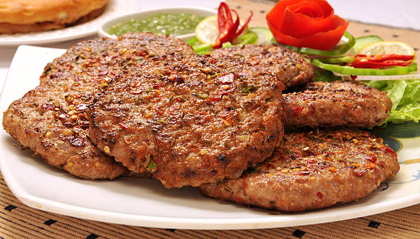

Back to States
Tundey Kebab

Ingredients
- 500g minced mutton
- 2 onions, finely chopped
- 4-5 green chilies, finely chopped
- 2 tbsp ginger-garlic paste
- 1/2 cup raw papaya paste
- 2 tbsp roasted chickpea flour
- 1 tsp garam masala
- 1 tsp red chili powder
- 1/2 tsp turmeric powder
- Salt to taste
- Ghee for frying
- Mint leaves for garnish
- Lemon wedges to serve
Instructions
1. Mix minced mutton with raw papaya paste and let it marinate for 2 hours.
2. Add finely chopped onions, green chilies, and ginger-garlic paste.
3. Mix in roasted chickpea flour and all the spices.
4. Knead the mixture well until it becomes soft and smooth.
5. Shape into small, flat patties.
6. Heat ghee in a flat pan or tawa.
7. Cook kebabs on medium heat until golden brown on both sides.
8. Garnish with mint leaves and serve hot with paratha and onion rings.